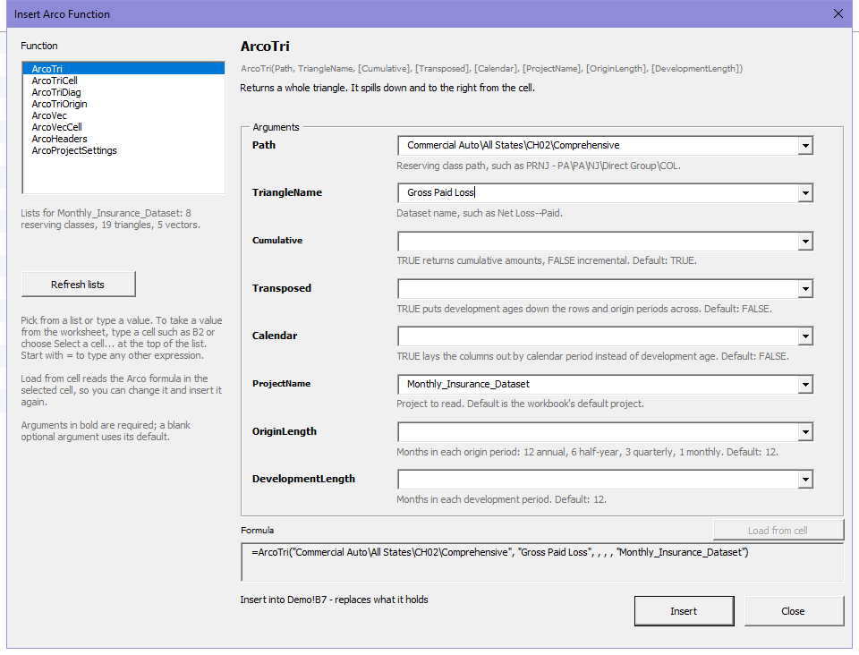
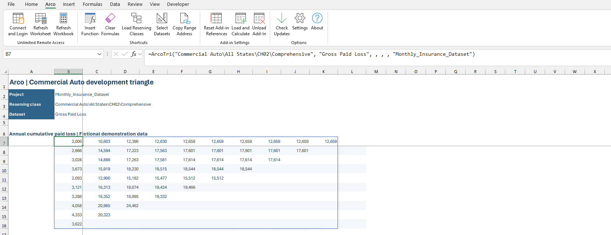

Excel Add-In
Bring the demo's values into Excel
Use the Arco add-in to insert a dataset formula, refresh its results, and save a workbook that carries the reviewed values.
Identify the Dataset First
- In Arco, open Monthly_Insurance_Dataset and select Commercial Auto → All States → CH02 → Comprehensive.
- Open Gross Paid Loss and check its annual cumulative view before requesting the same data in Excel.
- In Excel, confirm the Arco ribbon is available. Use the installed add-in supplied for your environment.
- Choose Connect and Login and check the workbook's project connection.

Insert a Triangle Formula
- Select an empty worksheet cell with room for the triangle to spill into the rows and columns beside it.
- Choose Arco → Insert Function, then select ArcoTri.
- Choose the demo project, segment path, and Gross Paid Loss. Use TRUE for Cumulative, FALSE for Transposed and Calendar, and 12 for both period lengths. You can leave an optional field blank when its displayed default matches.
- Inspect the formula preview and insert it. Check that values appear in the intended cells.
You can also put the project in B2, the path in B3, and the dataset name in B4, then enter:
B2: Monthly_Insurance_Dataset
B3: Commercial Auto\All States\CH02\Comprehensive
B4: Gross Paid Loss
=ArcoTri($B$3,$B$4,TRUE,FALSE,FALSE,$B$2,12,12)
Use ArcoVec for a vector such as Guide Paid Ultimate. Load Reserving Classes and Select Datasets help fill paths and names; Refresh lists updates the Insert Function panel's available choices.
Refresh and Share the Workbook
- Choose Refresh Worksheet for the active sheet or Refresh Workbook for the workbook's Arco requests.
- Wait for refresh to finish and inspect any reported failure.
- Compare a few origin values with the same dataset and period settings in Arco.
- Save the workbook so its current Arco results travel with it.
Repair an Older Workbook
Use Reset Add-in References when a workbook points to an old add-in location or older supported function names. Check the target add-in and choose Update workbook, then read the repair result.
Reference repair does not fetch new project data or save the workbook. Refresh if needed, inspect the values, and save afterwards.